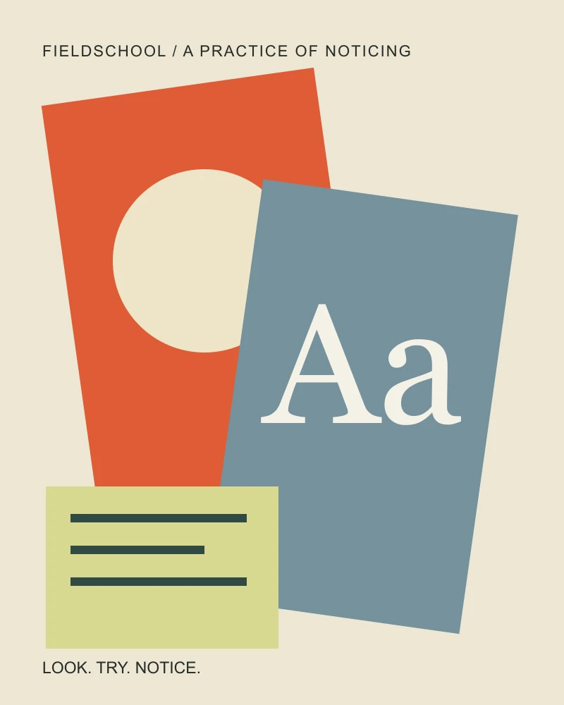
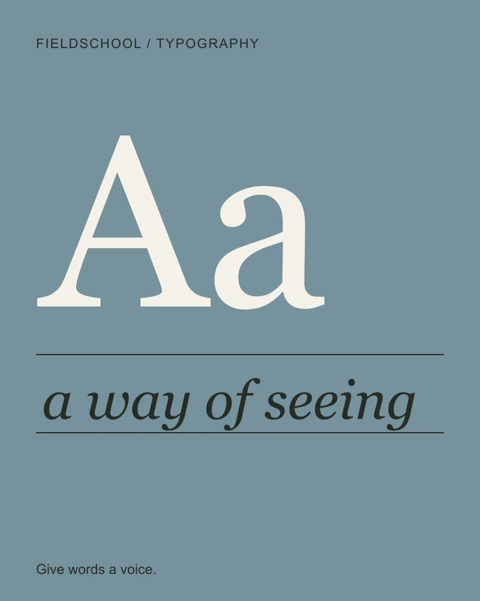
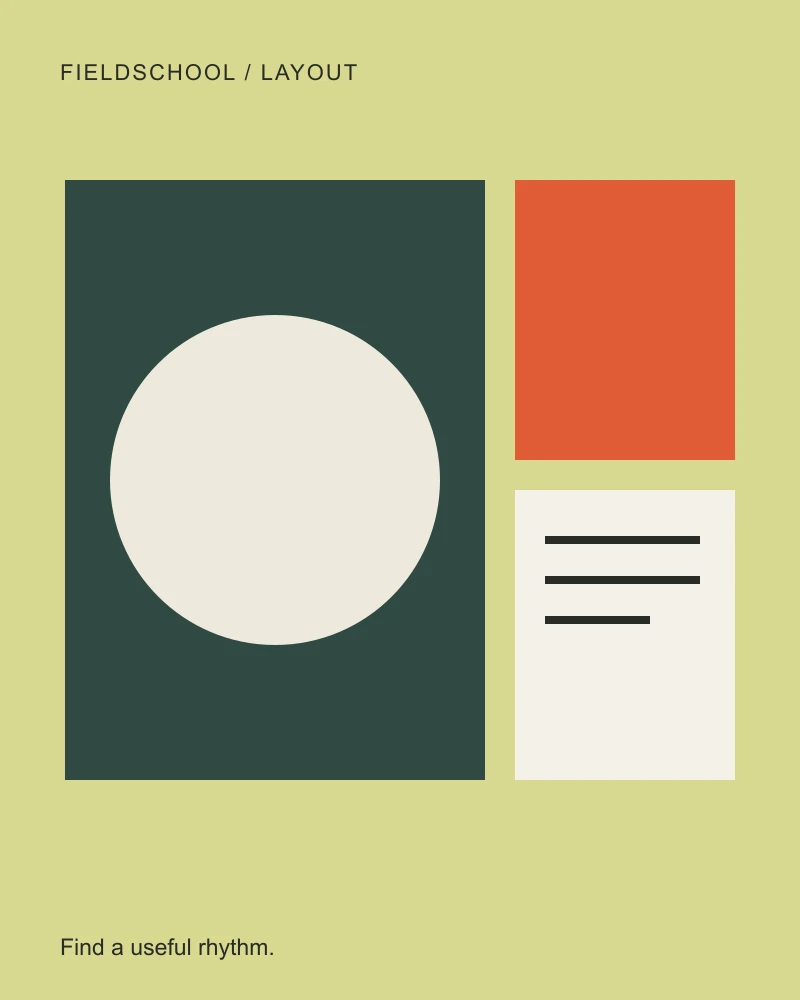

Color25 minute exercise
Make color work.
A palette is a set of relationships. Learn to make those relationships useful.
Explore the lesson ↗Not another saved tutorial. A little time, a useful idea, and something you can call your own.
Find your first project ↗
Less watching.Pick one thing you want to understand. Leave with a small experiment, not a long to-do list.
A palette is a set of relationships. Learn to make those relationships useful.
Explore the lesson ↗
The same sentence can whisper, explain, or take the whole room.
Explore the lesson ↗
A grid is a way to make room for difference, not a reason to make everything equal.
Explore the lesson ↗Small, deliberate changes make big ideas easier to understand. Each lesson gives you a question and room to find your own answer.
A color beside another. A line beside a margin. Start with what changes when two things meet.
Try a different measure, proportion or tone. See what it does before changing everything else.
Save the settings and write a few words. Your notebook remembers the thinking, as well as the result.
See how a paper tone and an ink color change the same message. Get a measured contrast ratio while you explore.
Open the color studio ↗Only this browser. Each lesson includes a small working exercise. There is no installation, account or payment.
A color pair, a type specimen, and a responsive composition. Save each experiment and your reflections in a local notebook.
No. It stays in the current browser. Export the notebook as Markdown to keep a portable copy of your work.
These are short introductory exercises, not a certification program. The times describe suggested practice sessions, not recorded video lengths.